Attraction
観光名所
九份
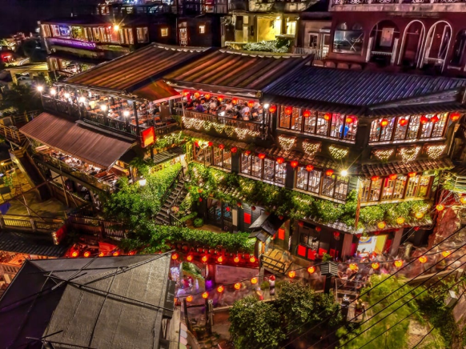細い路地の階段に沿って建つ古い館に、提灯が灯るノスタルジックな風景。1989年、映画「非情城市」の舞台になったことをきっかけに再び注目を集めると共に、日本では、九份の町中にある建物が2001年公開の映画「千と千尋の神隠し」に登場する湯婆婆の湯屋を彷彿させるとして話題に。日本統治時代に建てられた古い建物が残ることから、どこか懐かしい雰囲気が漂う町並みは日本人の琴線に触れ、今や台湾で行きたい観光地ナンバーワンとなりました。
おすすめ観光時間は幻想的な夕暮れがねらい
15:00～19:00
台北101

高さは509.2m 地下5階+地上101階からなり、名前の由来にもなっている。エレベーターは東芝エレベータ製で、毎分1,010メートル（時速60.6キロメートル）の速さで上昇でき、地上1階から展望台のある89階（地上382.2メートル）まで39秒で到達する。展望台、オフィス、レストラン、ショッピングモールなどが入る台湾を代表するランドマークワー。有名なカウントダウンパーティーをはじめ節目に合わせたライトアップを行っている。
おすすめ観光時間は展望台営業時間帯
11:00～19:00
 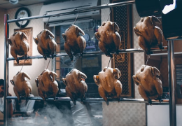
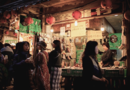
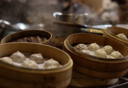
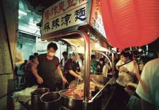
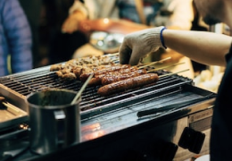
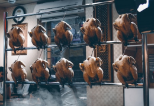
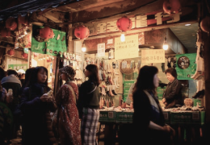
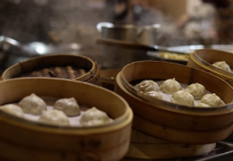
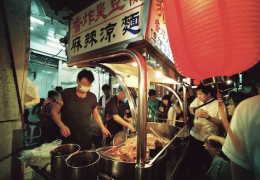
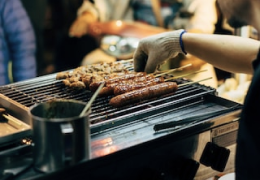
士林夜市

ここは市内で最も規模が大きく知名度の高い夜市で、台湾のおいしい屋台グルメからユニークな雑貨まで、ありとあらゆるものが売られています。その種類の豊富さ、敷地の広さ、歴史、そして夜遊びスポットとしての人気度と、士林夜市の魅力は何から何まで台北ナンバーワン。台北観光では絶対にはずせない魅惑スポットです。
営業時間
日曜日16:00 - 00:00
月曜日16:00 - 00:00
火曜日16:00 - 00:00
水曜日16:00 - 00:00
木曜日16:00 - 00:00
金曜日16:00 - 00:00
土曜日16:00 - 00:00
饒河街観光夜市

饒河街観光夜市は、雑貨や洋服、生活用品、おいしい屋台料理などを扱うところで、その手ごろな値段が魅力的で、多くの人々で賑わいます。最も観光客に人気があるのは「藥燉排骨」、「胡椒餅」、「水煎包」、「蚵仔麵線」、行列の長さを見ればその人気ぶりが窺えると言われています。それに、「麻辣臭豆腐」、「牛肉麵」、「天婦羅」など台湾の伝統的な屋台料理も人気です。
営業時間
日曜日17:00 - 23:00
月曜日17:00 - 23:00
火曜日17:00 - 23:00
水曜日17:00 - 23:00
木曜日17:00 - 23:00
金曜日17:00 - 23:00
土曜日17:00 - 23:00
通化夜市
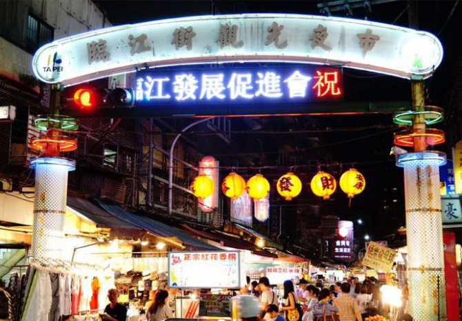台北の他の夜市と比べると小規模ではあるものの、食べ物においてはどの夜市にも決して劣りません。有名な駱記小炒(炒め物)、裕品元の氷火湯円、平価鉄板焼、通化夜市の揚げサツマイモボールは、ぜひとも賞味したい特色的な伝統軽食です。歩き疲れたら、マッサージ店もたくさんありますから、肩や足裏をもんでもらえば一晩ぐっすり眠れますよ。
営業時間
日曜日18:00 - 24:00
月曜日18:00 - 24:00
火曜日18:00 - 24:00
水曜日18:00 - 24:00
木曜日18:00 - 24:00
金曜日18:00 - 24:00
土曜日18:00 - 24:00
寧夏夜市

寧夏路夜市は台湾伝統の屋台料理やB級グルメがメインの夜市です。特に大同区の圓環付近には懐かしいグルメがたくさん集まっていますので、思う存分味わってください。また、ここの夜市は歩道と車道が分かれているので、食事やショッピングに便利です。食の夜市とも言われる寧夏路夜市には毎日、大勢の人々が訪れています。
営業時間
日曜日17:00 - 25:00
月曜日17:00 - 25:00
火曜日17:00 - 25:00
水曜日17:00 - 25:00
木曜日17:00 - 25:00
金曜日17:00 - 25:00
土曜日17:00 - 25:00
Access
アクセス
交通手段
■MRT（地下鉄）：（初乗り20元）
乗り方は日本の地下鉄とほぼ同じ。
改札を通る時には、切符・ICカード共にタッチ。
台北MRTは全て各駅停車。
■バス：（初乗り15元）
バス停は、バス停のポールが立っているだけ、大通りでは車道の真ん中のバスレーン沿いにあります。乗りたい場合、バスに向かって手を挙げます。 乗車して、現金で払う場合は運転手に行先を告げて運賃箱にお金を入れます。
■バス：（初乗り15元）
バス停は、バス停のポールが立っているだけ、大通りでは車道の真ん中のバスレーン沿いにあります。乗りたい場合、バスに向かって手を挙げます。 乗車して、現金で払う場合は運転手に行先を告げて運賃箱にお金を入れます。
■EASYCARD（悠遊カード）：（販売額100元）
現金をチャージして使うことが出来る交通系ICカード。
台北旅行の際に手に入れておくと便利です。
MRT・バス・台湾鉄路などで使用することができ、
切符を買う手間がなく、運賃が割引（MRTは二割引き）になります。
お問い合わせはこちら